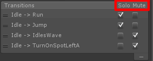

Unity3D的Mecanim动画系统之动画状态(二)
动画状态 (Animation State) 是 动画状态机 (Animation State Machine)的基本构造块。每个状态包含将在角色处于该状态时播放的单独动画序列（或混合树（Blend Tree））。游戏中的事件触发状态转换时，角色会保留为新状态，该状态的动画序列随后会接管播放。
在动画器控制器 (Animator Controller) 中选择状态时，会在检视器 (Inspector) 中看到该状态的属性：
属性
Paramter勾选后可以指定参数控制具体属性
|
属性： |
功能： |
|
运动 (Motion) |
分配给此状态的动画片段 |
|
速度 (Speed) |
动画的默认速度 |
|
镜像 (Mirror) |
镜像可以反转当前动画 |
|
周期偏移 (Cycle Offset) |
会影响动画开始的起始位置 |
|
脚 IK (Foot IK)[1] |
是否应对此状态考虑Foot IK |
|
写入预设 (Write Default) |
勾选后用默认动画剪辑属性覆盖到状态上 |
|
转换 (Transitions) |
源自此状态的转换的列表 |
任意状态 (Any State)
任意状态 (Any State) 是始终存在的特殊状态。该状态针对您要转变为特定状态（无论您当前处于何状态）的情况而存在。这是将相同向外转换添加到机器中所有状态的快速方法。请注意，任意状态 (Any State) 的特殊含义意味着它不能是转换的结束点（即，跳转到“任意状态”不能用作挑选下一次进入的随机状态的方式）。
动画状态机预览：Solo（独立） 和 Mute（关闭）

- 如果选择了mute，那么被选择的状态转移一定会被禁用；
- 如果不选择solo，在没有变量控制（结束条件为“exit time”）的情况下，该状态优先选择动作列表中最前（或者说最上的）的状态转移；
- 如果选择了某个solo，那么在没有变量控制（结束条件为“exit time”）的情况下，优先选择标记solo的状态转移；
- 如果有多个状态转移选中了solo，那么优先选择这些已选中solo的状态转移中，在动作列表中靠前的状态转移；
- solo状态转移被显示为绿色，mute状态转移被显示为红色。
在下面的图中，如果你处于状态Idle中，那么只有状态Run和状态Jump 可以使用。
基本的原则是：
如果一个状态被标记为solo，那么其余的状态转移将被视为选中mute；
如果solo和mute同时被选中，那么mute的优先级更高（即视为只选中了mute）。
这个功能用在调试时，Mute相当于把目标过渡禁用掉。Solo表示只生效这一条过渡
条件满足优先于Solo/Mute，当条件没有满足时依然不会过渡
注释：
[1]IK动画全名是Inverse Kinematics 意思是反向动力学，就是子骨骼节点带动父骨骼节点运动。比如跳街舞的少年用手撑着身体在地上转圈，手就是子骨骼，胳膊身体就是它的父骨骼，这时运动手就需要带动胳膊身体来移动。
如果您觉得本文不错，可以选择打赏。打赏多少，您高兴就行，谢谢您的支持！ ~(@^_^@)~